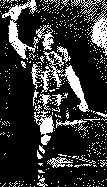

Formed in 2009, the Archive Team (not to be confused with the archive.org Archive-It Team) is a rogue archivist collective dedicated to saving copies of rapidly dying or deleted websites for the sake of history and digital heritage. The group is 100% composed of volunteers and interested parties, and has expanded into a large amount of related projects for saving online and digital history.
Formed in 2009, the Archive Team (not to be confused with the archive.org Archive-It Team) is a rogue archivist collective dedicated to saving copies of rapidly dying or deleted websites for the sake of history and digital heritage. The group is 100% composed of volunteers and interested parties, and has expanded into a large amount of related projects for saving online and digital history.

Siegfried
Siegfried is a signature-based file format identification tool.
It implements:
Install
Windows
- download latest (v. 1.7.4) binary: (64bit | 32bit)
- copy to a location in your system path
- run the `sf -update` command to download the latest signatures (got troubles? Try this troubleshooting guide)
Mac Homebrew (or Linuxbrew)
brew install mistydemeo/digipres/siegfried
Or, for the most recent updates, you can install from this fork:
brew install richardlehane/digipres/siegfried
Ubuntu/Debian (64 bit)
wget -qO - https://bintray.com/user/downloadSubjectPublicKey?username=bintray | sudo apt-key add -
echo "deb http://dl.bintray.com/siegfried/debian wheezy main" | sudo tee -a /etc/apt/sources.list
sudo apt-get update && sudo apt-get install siegfried
FreeBSD
pkg install siegfried
Usage
Identify a file
sf file.ext
Identify all files in a directory and its subdirectories
sf DIR
Identify all files in a directory but not subdirectories
sf -nr DIR
Use a redirect (">") to save your results
sf file.ext or DIR > my_results.yaml
Get identification results in CSV format (default is YAML)
sf -csv file.ext or DIR > my_results.csv
Get identification results in JSON format
sf -json file.ext or DIR > my_results.json
Scan within zip, tar, gzip, warc or arc files
sf -z file.ext or DIR
Calculate md5, sha1, sha256, sha512, or crc hash
sf -hash sha1 file.ext or DIR
Update your signature file
sf -update
Additional commands
For more detail on using sf, see this guide.
Modify your signature file
The roy tool builds siegfried signature files. For help using this tool, see this guide.
Examples
User Guide
Detailed information about installing siegfried, identifying file formats, as well as more advanced topics, is available on the wiki.
Sets
Sets are a feature of the roy tool. They allow you to select groups of formats when building custom signatures. E.g. with a command like `roy build -limit @pdf`. These sets can be useful in other contexts, for example when defining a software workflow that only operates on certain types of files. You might, for example, want to isolate all the PUIDs for the formats that Apache Tika can text extract. Or the audio-visual files that Exiftool can generate metadata for. The sets tool allows you to do this online.
Code, License, Issues
To view the source code and see the license details, go to the project page on Github. Please post any bugs or feature request to the issues page.
Announcements
Join the Google Group for updates, signature releases, and help.
Try Siegfried

Drag a file on to Siegfried's anvil!